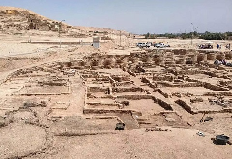

|
E G I P T O
El granero de Roma … La gran
Cleopatra y Julio Cesar. La guerra civil entre Octavio y Marco Antonio
provoco que, tras la batalla de Actium, Egipto se convirtiera en una
provincia romana. Destacamos todos los yacimientos arqueológicos, como
ejemplo:
El área arqueológica de
Alejandría con su teatro y museo greco-romanos.
El área arqueológica Dendera y el mammisi romano.
El campamento romano de Kysis en Dush y su área arqueológica.
El área arqueológica de Edfu.
Las murallas de la fortaleza romana de Babylon en El Cairo. Y
como no visitar su Museo y las Pirámides.
Las áreas arqueológicas de Esna, Kalabsha, Kanais, Luxor….
En enero de 2021 en la provincia de
Aswan son descubiertos los restos de un fuerte romano y un templo
ptolemaico.
En febrero de 2024, junto al
templo de Luxor, han sacado a la luz algunos vestigios de la ocupación
romana en la zona, restos que los arqueólogos han calificado como una
"ciudad residencial completa", cuya datación preliminar sugiere que
podría haber sido construida entre los siglos II al III.

Foto Historia.nationalgeographic
|